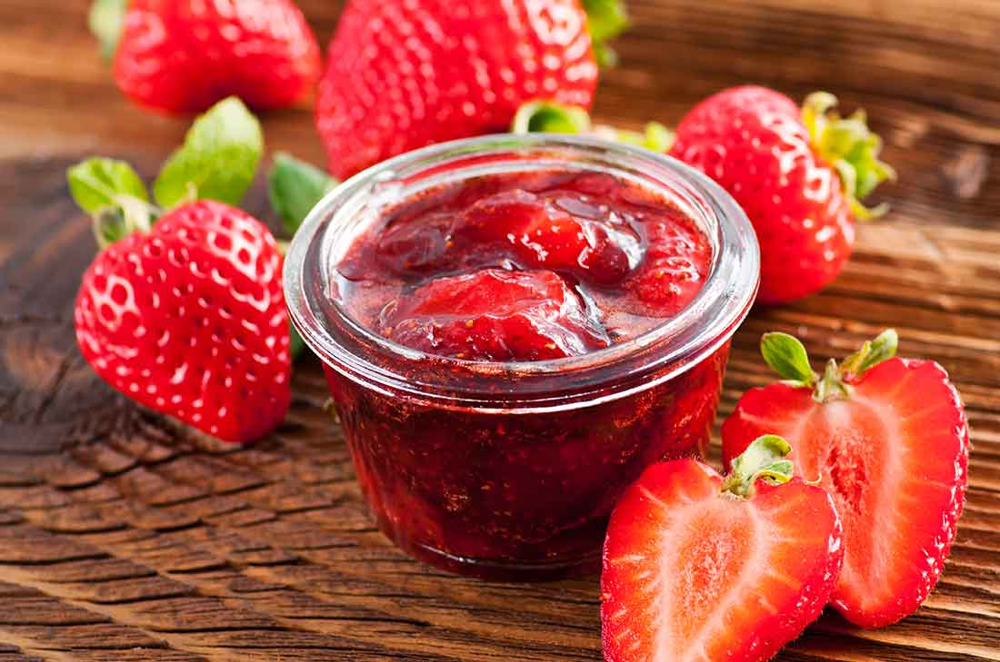

https://github.com/maria-delgado/Recetario1.git
Sweet Delicious -Marmalades-
Strawberry jam
Ingredients

- 5 Cups chopped strawberries.
- 3 Cups of sugar.
- 1/2 Teaspoon of pectin.
Steps to follow
- Mix the strawberries with the sugar in a bowl; allow them to macerate overnight.
- The next day, boil the mixture for 35 minutes, add the pectin and boil for five more minutes.
- Turn off the flame and carefully pour immediately into sealed containers and boil for five minutes. Allow it to cool.
- Once one of the containers is opened, keep it in the refrigerator until it is consumed.